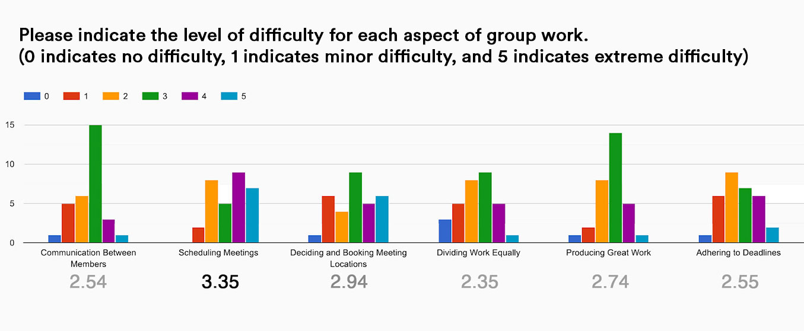
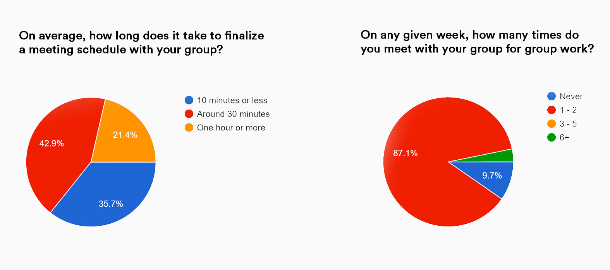
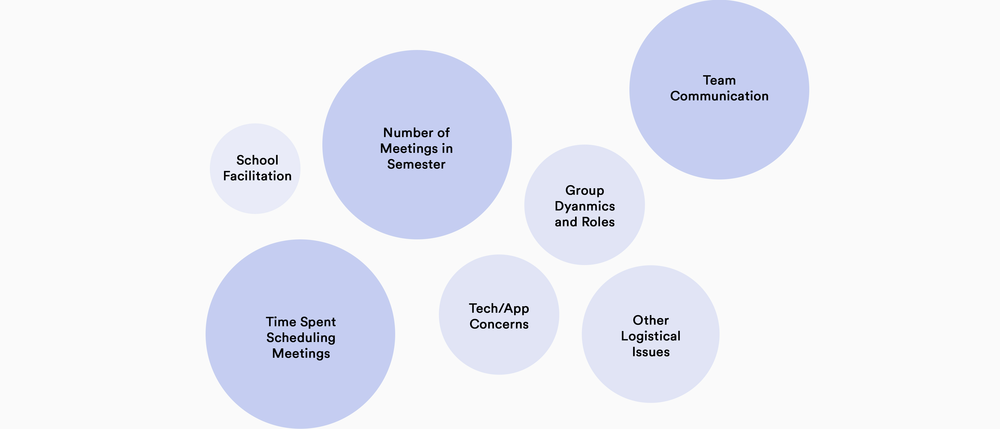

Secondary Research
According to Sugumaran et al. (2006), a human’s natural resource allocation does not cater to the kind of information handling that is required to process multiple, independent schedules and to derive the most ideal time for a meeting.
As such, Crawford & Veloso (2004) suggest that the most common approach to scheduling meetups is currently one based entirely in compromise.
If coordination costs are excessive or are not factored into the structure of group assignments, groups tend to miss deadlines, their work is poorly integrated, motivation suffers, and creativity declines.
Although alternative solutions like Doodle, Calendly, and TimeTree currently exist, students have complained that these tools are difficult to set-up. Students also experienced push-back when suggesting the use of these apps from teammates who were unfamiliar with these solutions.
In addition, students had a tendency to resort back to negotiating meeting times through the use of online chat, defeating the value of such tools in the first place.
Primary Research
We conducted face-to-face interviews (n=10) and an online survey (n=42) to collect both qualitative and quantitative data to gather a comprehensive understanding of the problem space.
Our initial survey findings suggested that participants rated meeting scheduling to be the most difficult aspect of group work.
Probing into this problem space further, we found that about 64.3% of people indicated that they would take 30 minutes or more to schedule a meeting.
This is quite significant given that around 87.1% of students met with their groups at least once or twice a week for about an hour.
We used thematic analysis and an affinity diagram to interpret qualitative data. Seven primary themes emerged from analysis after clustering.



{kind=link}
{kind=link}
{kind=link}
{kind=link}
{kind=link}
{kind=link}
{kind=link}